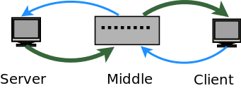
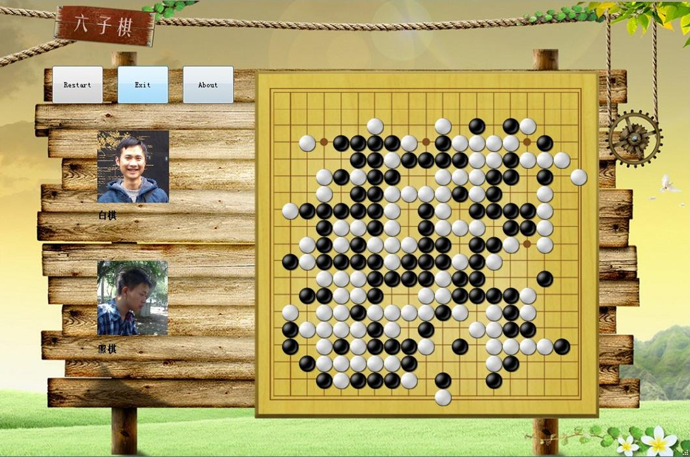
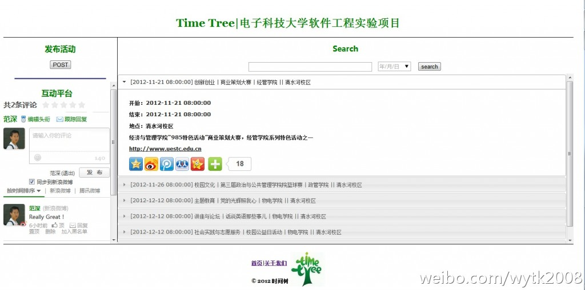
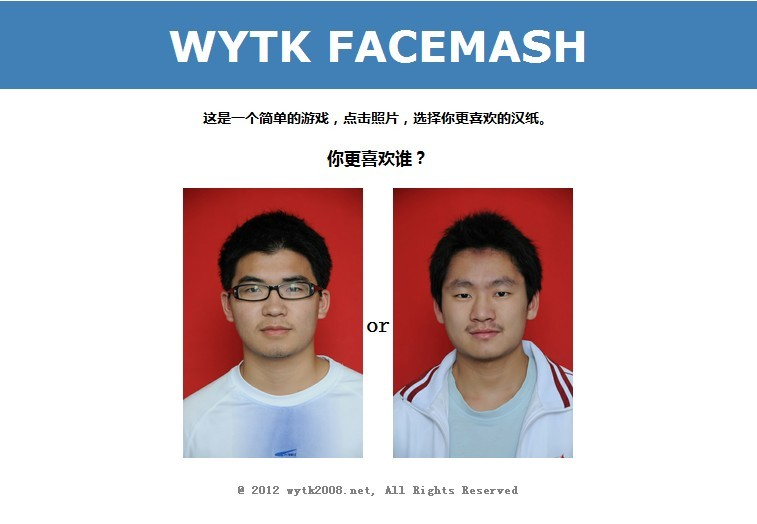
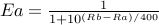
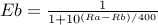

|
Projects
UDP FileSystem with flash transmit
A Training project in my internship at Tencent (Augest 27th, 2013)
|
 |
A filesystem support basic downloads/show directory/upload methods. While in upload process, server can detect same file(with the same md5) in the server and using flash transmit to stop transmition in the network.
Key technologies used in this project: C.
Code stored in github: http://github.com/fs302/FileServer
Test report:UDP_FileSystem
|
UESTC-Connect6 game
Students Research Funds of UESTC, In Collaboration with Yong-jun Lee, advised by Prof.Hui Gao (Dec 18th, 2012)
|
 |
Connect6 was introduced in 2003 by Professor I-Chen Wu at Taiwan. It is fairer and harder than Connect5, the classic puzzle game.
I pick connect6 as the project because there is a competition called University Computer Games Championship. Connect6 is the required event in this competition.
I first adapted the road repesentation mechanism into the programming framework, then using temporal difference learning algorithm to adjust weights of evaluation function. After 3 days training, the new weight sets outperforms the old one, which is an amazing result.
I also share this game with my friends, most of them found it quite interesting and not so easy to defeat our robot.
Here is my paper:<Temporal Diffrence Learning Algorithm Based on Road of Connect6 Game>
Key technologies used in this project: C++(with Qt framework).
Software Download:UESTC-Connect6
|
UESTC Time Tree
Software Engineering Project (Nov 18th, 2012)
|
 |
It is a Campus-Info-Share application, Like HarvardEvents.
We extract recent to-be-hold event from the XLS form document that is released by UESTC Student Union, and store them into our database for students to retrieve needed events, as well as share events to their social network service like Qzone, Weibo, Renren, etc.
Key technologies used in this project: PHP/SQL/CSS/Javascript/Python.
We make these site as our project of Software Engineering Class, and we get Rank 1/17 in the whole class.
More info you can see in my blog:软件工程也好玩
|
Xianyu Facemash
My first Web application (June 26th, 2012)
|
 |
It is a “hot or not” game which allows visitors to compare two student pictures side-by-side and let them choose who was “hot” and who was “not”. Which is initially produced by Mark Zuckerberg, as the Facebook's predecessor.
Key concept of this game is called Elo rating system, it is a method for calculating the relative skill level of players in competitor-versus-competitor games such as chess. Here is the equations:


Ex is the expected probability that X will win the match. Ea + Eb = 1. Rx is the rating of X, which changes after every match. That is:
where Wx = 1 if x wins and Wx = 0 if x loses, K is a constant number to control the change rate.
DEMO
Key technologies used in this project: PHP/SQL/CSS.
|
|